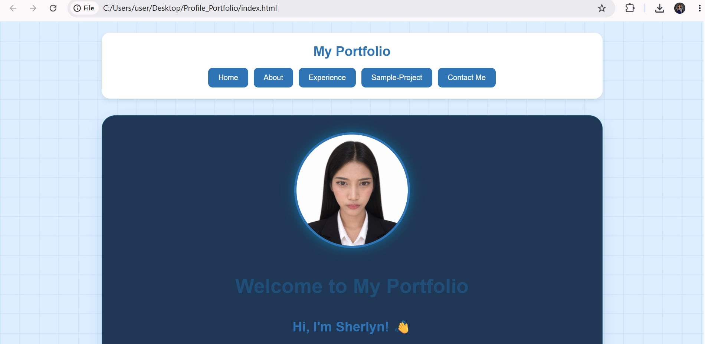

01 / HTML & CSS · Individual activity
ByteCare Computer Repair Service
A computer repair service website designed to present repair services and basic business information through a simple and organized layout.
Showcase
A collection of my school projects and coding activities, reflecting the skills and ideas I've developed along the way.
01 / HTML & CSS · Individual activity
A computer repair service website designed to present repair services and basic business information through a simple and organized layout.

02 / HTML & CSS · Personal project
A personal website that introduces my background, interests, skills, and projects using HTML and CSS.

03 / C Programming · Classroom activity
A collection of my C programming exercises that demonstrate basic coding concepts, problem-solving, and program output.